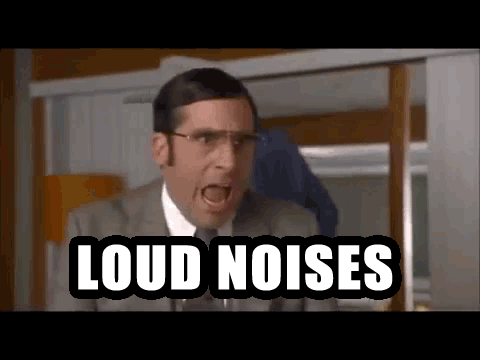
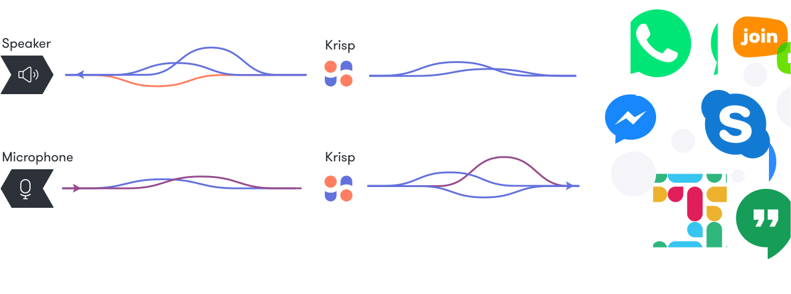
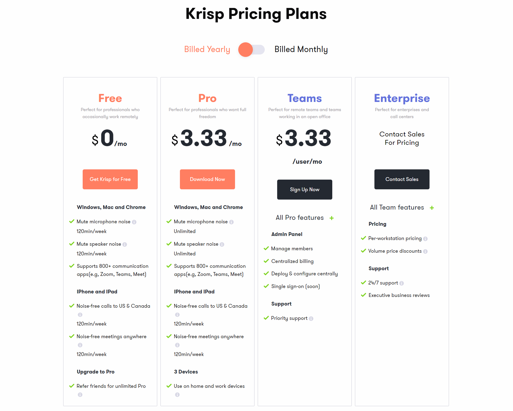

Meet Krisp, the free noise cancellation software that will save your bacon during quarantine. (NVIDIA RTX VOICE Alternative)
Compartilhe esse post nas redes sociais...
Hello Homelabers!
If you, like me, have children at home, you will be very familiar with the situation:
Right at that time when you are presenting a webinar or in that meeting with your customer closing that important deal or talking to your boss, the children decide to declare the third world war and you have to ask for a minute to kindly ask everyone to ~~shut up ~~ be quiet.

I recently discovered a software called Krisp (thanks for the tip @duboc) that will solve once and for all this problem.
Krisp (https://krisp.ai/) is tiny software that once installed on your computer, will magically filter any existing background noise and your voice will be perfect for whoever is listening. The dog can bark, the child can cry, the neighbor can make the noise he wants that no one on the other end of the call will hear!
Before continuing reading the post, see this short video that I recorded with a demonstration of how Krisp works (video is in Brazilian Portuguese, but you will get the idea.). Note that in the video, I’m using a vacuum cleaner right next to the microphone, and you won’t hear ANYTHING! Krisp eliminates ALL background noise. There is no editing tricks. It really works!
What is Krisp
Krisp is a virtual microphone that sits between the physical microphone and the video/audio conference application on your computer. It silences the noise (dog barking, children crying, air conditioning rumming, noise mechanical keyboards, you chose.) in the background for callers.
Basically Krisp is software that creates a virtual microphone on your computer and filters out all the background noise in your environment, leaving only your voice.
Krisp can be used on Microsoft Windows, MacOS and Google Chrome systems (as a plugin) and iOS. Its installation is quite easy and it integrates with the largest conference systems on the market such as Zoom, Webex, Microsof Teams, Skype, Discord and others.
It is also worth remembering that Krisp also filters the audio that comes from the other side, that is, if the person you are talking to is not using Krisp, but you are, you will not hear their background noise, just the voice.

Installing Krisp
Installing Krisp is quite simple. Just download the program from the website and follow the instructions. There’s no secret: Next, Next, Finish.

Setting up and using Krisp
At the end of the installation, a video with tutorials to configure Krisp on various conference systems will be presented.
As I said before, Krisp creates a virtual microphone on your computer that will filter out all the background noise, leaving only your voice!
Just choose Krisp as your microphone in any audio program and voila!
How much does Krisp cost? Isn’t it free?
Krisp is free to use. The free account will give you 120 minutes of filtered audio per week. You start with a trial of the PRO account.
If you choose a PRO account, there are monthly and annual plans (see price list on the website)

There is also an option to use the Referral Program where you can share your link and extend the trial period of the PRO account. For each person who signs up using their referral link, you get 2 months free of PRO account and the person gets 1 month. If the person registers with the same business email as you, you will receive 4 months free of PRO account.
Too cool isn’t it?
My referral link is this one. If you can register for it, we both won!
Alternatives to Krisp - NVIDIA RTX VOICE
Last week, a video went viral on twitter, where a Youtuber named Barnacules Nerdgasm tested NVIDIA Beta software called RTX Voice (link).
Nvidia's RTX Voice tech looks AMAZING. I can finally use a desk mic again with my mechanical keyboard! @Barnacules's test with the fan and hammer is so impressive https://t.co/ES7ELMiMQS pic.twitter.com/PCiA0DRcpW
— theGunrun (@theGunrun) April 22, 2020
The software works just like Krisp, but a NVIDIA GeForce RTX video card (which costs a small fortune and only works on Windows 10) is required for its operation. So, if you are the happy owner of an RTX, you can test and use NVIDIA’s software! As it is not my case, I will keep using Krisp!
If you search the internet, you will find tips on how to use RTX Voice on your PC even without a RTX video card, but I didn’t have the time to take the test the hack. If you tried it, send me your impressions on Twitter.
My opinion about Krisp. Is it worth using?
I have been using Krisp for two weeks and I can say that everything works perfectly well. It does not consume much computer memory and I have not had any crashes so far. I have other friends using it and everyone are happy as well!
If you, like me, are working from home in quarantine and have children or pets or noisy neighbors, don’t think twice and install Krisp on your computer (use my referral code) and be happy!
Is it worth paying for the PRO version? I believe so, if you use it a lot. I spend a lot more than 120 minutes hanging on the Zoom per week and USD $3.33 for 3 devices, per month is not that high. Think about that espresso you are saving while at home ;)
I am still using Trial and I hope to get a few more months of PRO account with you who will use my referral code), otherwise, I will more than happy pay for the software.
That’s it folks! I hope you enjoyed the post and that it will be useful for you. Share with your friends from work and friends from gaming (that annoying guy with loud mechanical keybord), etc. Send me on twitter, linkedin, whatsapp if you are using Krisp and how your experience with it has been or if you know other alternatives
Compartilhe esse post nas redes sociais...Valdecir Carvalho
Nerd e pai orgulhoso da Mariana e João. Profissional Sênior de TI com foco em arquitetura de infraestrutura e cloud computing. Blogueiro, podcaster, palestrante, amante de comunidades técnicas, fotógrafo aposentado e adora jogos antigos.
#vExpert · #VMUGLeader · #VUGBrasil · #vBronwBagBrasil · #VeeamVanguard